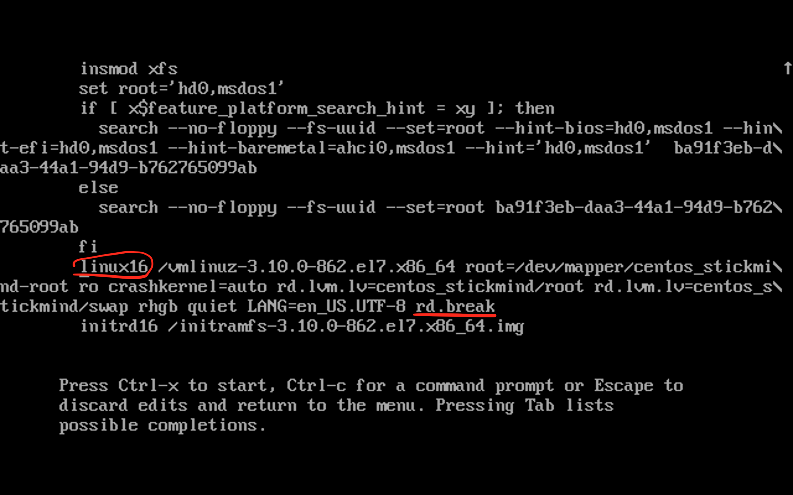

Linux 学习笔记[1%]
发表于 2018-10-10
0. 关于学习 Linux 系统
- 发行版本：综合网上信息，商用上目前国内使用 CentOS 居多，目前最新版本是 CentOS-7-1804
- 学习平台：MacBook + 虚拟机
- 教材：《Linux 就该这么学》、《鸟哥的 Linux 私房菜》
1. 系统安装
安装 CentOS 过程中的几个选项：
- SOFTWARE SELECTION 选择 Server with GUI
- INSTALLATION DESTINATION 默认即可
- NETWORK & HOSTNAME 网上写的是个人域名，那就写自己的网址好了，例如：stickmind.com
执行安装后：
- ROOT PASSWORD 设置太简单的话，可以通过双击
DONE按钮通过
- USER CREATION 创建一个本地用户
1.1 如何重置 root 密码？
a. 开机后，在引导界面按键盘上e键，进入内核编辑界面。
b. 在“linux16”参数这行的最后面追加“rd.break”参数，然后按下Ctrl + X组合键来运行修改过的内核程序：

c. 进入到系统的紧急求援模式，依次执行以下代码，重启后便完成了新密码的设置。
$ mount -o remount,rw /sysroot
$ chroot /sysroot
$ passwd
$ touch /.autorelabel
$ exit
$ reboot